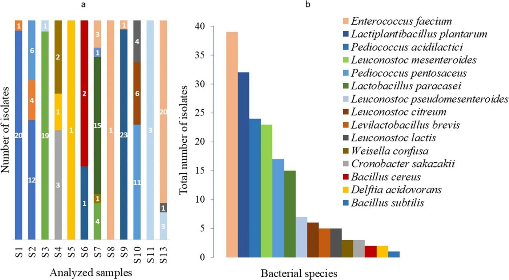

Kashyu pishlog'ining yashirin hayoti: fermentlangan mahsulotlarda nimalar yashiringan


Kashyu asosidagi o'simlik pishloqlarining ommalashuvi ularning mikrobiologik tarkibini qat'iy nazorat qilishni talab qiladi. Braziliyadan olingan 13 ta namunani o'rganish salmonella kabi xavfli patogenlar yo'qligini ko'rsatdi. Biroq, mahsulotlarda antibiotiklarga chidamlilik genlari bo'lgan bakteriyalar aniqlandi, bu esa ishlab chiqaruvchilar uchun ogohlantirishdir.
Asosiysi
- Kashyu pishlog'ida xavfli patogenlar yo'q, lekin antibiotiklarga chidamli bakteriyalar genlari aniqlangan.
- Fermentlangan mahsulotlarda mog'or va achitqilarning yuqori miqdori, agar ular ataylab qo'shilgan bo'lsa, me'yor hisoblanadi.
- Shtammlardagi mobil genetik elementlarning mavjudligi xamirturushlar xavfsizligini qat'iy nazorat qilishni talab qiladi.
Batafsil
Tadqiqotchilar 13 ta kashyu pishlog'i namunasini mikroflorani aniqlash uchun MALDI-TOF mass-spektrometriyasi va antibiotiklarga chidamlilik (AMR) genlarini izlash uchun to'liq genom ketma-ketligini tahlil qilish usullari yordamida o'rgandilar. Namunalarda Salmonella spp., E. coli yoki koagulaza-musbat stafilokokklar aniqlanmadi, bu ishlab chiqarish gigienasi darajasi qoniqarli ekanligini anglatadi. Biroq, bir namunada Bacillus cereus, shuningdek, Cronobacter malonaticus va Delftia acidovorans aniqlandi.
Ajratib olingan 176 ta sut kislotasi bakteriyalari (LAB) shtammlari orasida Enterococcus faecium va Lactiplantibacillus plantarum eng keng tarqalgan bo'lib chiqdi. Tahlil 8 ta antibiotikka chidamlilik genini aniqladi, ulardan 4 tasi boshqa bakteriyalarga o'tishi mumkin bo'lgan mobil genetik elementlar — plazmidalarda joylashgan edi. C. malonaticus va Levilactobacillus brevis shtammlarida bunday genlarning mavjudligi fermentlangan mahsulotlar orqali chidamlilik tarqalishi xavfini ko'rsatadi.
Cheklovlar
Tadqiqot faqat bitta mintaqadan olingan 13 ta namunani qamrab olgan, shuning uchun natijalarni barcha turdagi o'simlik pishloqlariga tatbiq etib bo'lmaydi.
Maqolaning to'liq tarjimasi
Annotatsiya
Soʻnggi yillarda oʻsimlik asosidagi pishloq analoglariga boʻlgan talab ortdi, bunga ham vegan va vegetarian parhezlarining ommalashuvi, ham isteʼmolchilarning hayvonot mahsulotlariga oʻsimlik asosidagi muqobillarni izlashi sabab boʻldi. Ularni ishlab chiqarish turli xil xomashyoga tayanadi va koʻpincha mogʻor zamburugʻlari, achitqilar va sut kislotasi bakteriyalari (SKB) ishtirokidagi fermentatsiya jarayonlarini oʻz ichiga oladi. Shu nuqtai nazardan, fermentatsiyada qatnashadigan murakkab mikrob jamoalari tufayli oziq-ovqat xavfsizligini, shu jumladan antimikrob qarshilik (AMQ) jihatlarini taʼminlash muhim ahamiyatga ega. Shu sababli, ushbu tadqiqot Braziliyada xarid qilingan oʻsimlik asosidagi pishloq analoglarida jamoat salomatligi uchun potentsial ahamiyatga ega boʻlgan bakteriya turlarining mavjudligini oʻrgandi hamda AMQ profillari va genlarini baholadi.
Muhim
Tekshirilgan namunalarda Salmonella spp., koagulaza-musbat Staphylococcus yoki Escherichia coli aniqlanmadi, biroq bitta namunada Bacillus cereus topildi.
Sinovdan oʻtgan namunalarning hech birida Salmonella spp., koagulaza-musbat Staphylococcus yoki Escherichia coli aniqlanmadi, Bacillus cereus esa bitta namunada qayd etildi. Salmonella uchun selektiv muhitlarda ajratib olingan ikkita atipik koloniya Cronobacter malonaticus va Delftia acidovorans deb identifikatsiya qilindi. Aksariyat namunalarda mogʻor va achitqilarning yuqori miqdori aniqlandi, bu ehtimol fermentatsiya va yetilish jarayonlari bilan bogʻliq. 176 ta SKB izolyati orasidan MALDI-TOF yordamida 11 tur identifikatsiya qilindi va yigirmata vakil shtamm antimikrob sezgirlikni tekshirish uchun tanlab olindi. Qarshilik cheklangan miqdordagi izolyatlarda, asosan siprofloksatsin, tetratsiklin va gentamitsinga nisbatan aniqlandi, C. malonaticus esa penitsillinga nisbatan qarshilik koʻrsatdi.
Izoh
MALDI-TOF — mikroorganizmlarni ularning oqsil profili boʻyicha tezkor identifikatsiya qilish imkonini beruvchi mass-spektrometriya usuli.
Lactiplantibacillus plantarum, Levilactobacillus brevis, Leuconostoc mesenteroides, Enterococcus faecium va C. malonaticus turlarining toʻliq genomini ketma-ketliklash (sequencing) amalga oshirildi. Jami sakkizta antimikrob qarshilik geni aniqlandi, ulardan toʻrttasi C. malonaticus va L. brevis plazmidalarida joylashgan edi. Ushbu topilmalar oʻsimlik asosidagi pishloq analoglari bilan bogʻliq mikroorganizmlar antimikrob qarshilik determinantlari ombori boʻlib xizmat qilishi mumkinligini koʻrsatadi, bu esa texnologik yoki probiotik maqsadlarda foydalanish uchun moʻljallangan shtammlarni xavfsizlik nuqtai nazaridan baholash va mikrobiologik nazorat qilish muhimligini taʼkidlaydi.
Kalit soʻzlar: Mikrobiologik xavfsizlik · Sut kislotasi bakteriyalari · Toʻliq genomni ketma-ketliklash · Mobil genetik elementlar · Qarshilik genlari
Kirish
Fermentlangan mahsulotlarning mikrobiologik xavfsizligi
Oziq-ovqat xavfsizligi butun dunyoda, ayniqsa mikrobial fermentatsiyaga asoslangan mahsulotlarda jamoat sogʻligʻining asosiy muammosi boʻlib qolmoqda. Fermentlangan mahsulotlar mahsulot sifati, barqarorligi va sensor xususiyatlariga hissa qoʻshadigan murakkab mikrobial jamoalarni oʻz ichiga oladi, ammo ular xomashyo, ishlab chiqarish muhiti yoki ishlab chiqarishdan keyingi ifloslanish orqali kirib kelgan istalmagan mikroorganizmlarni ham oʻz ichiga olishi mumkin.
Muhim
Fermentlangan mahsulotlardagi mikrobial jamoalar sifat uchun muhim, ammo ular tashqi muhitdan tushgan patogenlarni oʻz ichiga olishi mumkin.
Soʻnggi yillarda oʻsimlik asosidagi pishloq analoglari bozori barqaror, axloqiy va sogʻliq uchun foydali boʻlgan hayvonot mahsulotlariga muqobil variantlarga boʻlgan isteʼmolchi talabining ortishi tufayli sezilarli darajada oʻsdi. Ushbu mahsulotlar odatda yongʻoqlar, dukkaklilar, urugʻlar, kraxmallar va oʻsimlik moylaridan ishlab chiqariladi va koʻpincha taʼm, tekstura, saqlash muddati va mahsulotning umumiy qabul qilinishini yaxshilash uchun xamirturushlar, mogʻor zamburugʻlari va sut kislotasi bakteriyalari (LAB) ishtirokidagi fermentatsiya jarayonlarini oʻz ichiga oladi. Ushbu mikroblar orasida LAB kislotalanish, taʼm rivojlanishi va buzilish mikroorganizmlarini bostirish orqali markaziy texnologik rol oʻynaydi.
Xavflar va antimikrob qarshilik
Oʻsimlik asosidagi pishloq sektori tez oʻsishiga qaramay, ushbu mahsulotlarning mikrobiologik xavfsizligi toʻgʻrisidagi maʼlumotlar cheklanganligicha qolmoqda. Bu ayniqsa dolzarbdir, chunki koʻplab mahsulotlar kichik ishlab chiqaruvchilar tomonidan tayyorlanadi va issiqlik bilan ishlov berish yoki fermentatsiyadan oʻtmasligi mumkin, bu ularning opportunistik yoki patogen mikroorganizmlar bilan ifloslanishga moyilligini oshirishi mumkin. Bundan tashqari, fermentlangan mahsulotlarda mavjud boʻlgan mikrobial populyatsiyalar antimikrob qarshilik (AMR) determinantlarining potentsial rezervuarlari sifatida tobora koʻproq eʼtiborni tortmoqda.
Izoh
Antimikrob qarshilik (AMR) — bu mikroorganizmlarning antibiotiklar taʼsiriga chidamliligi boʻlib, bu infeksiyalarni davolashni qiyinlashtiradi.
LAB odatda xavfsiz deb tan olingan va starter kulturalar hamda probiotiklar sifatida keng qoʻllanilsa-da, baʼzi shtammlarda orttirilgan antimikrob qarshilik genlari (ARG) mavjudligi, ayniqsa mikrobial jamoalar ichida genlarning gorizontal uzatilishiga yordam beradigan mobil genetik elementlar bilan bogʻliq boʻlganlari haqida xabar berilgan. Oziq-ovqat bilan bogʻliq mikroorganizmlarda ARG mavjudligi bevosita sogʻliq uchun xavf tugʻdirmaydi; ammo, ushbu determinantlarni monitoring qilish oziq-ovqatlarning AMR ekologiyasi va tarqalishidagi potentsial rolini yaxshiroq tushunishga yordam beradi. Binobarin, ham mikrobiologik xavfsizlikni, ham AMR profillarini baholash fermentlangan oziq-ovqat tizimlarida tobora dolzarb boʻlib bormoqda.
Ushbu kontekstda, ushbu tadqiqot Braziliya kashyu asosidagi oʻsimlik pishloq analoglarining mikrobiologik xavfsizligini baholadi va ushbu mahsulotlardan ajratib olingan sut kislotasi bakteriyalari va bakterial ifloslantiruvchilarning antimikrob sezgirlik profillarini tekshirdi. Bundan tashqari, tanlangan izolatlar AMR genlarining mavjudligini baholash uchun toʻliq genom sekvenlash orqali tavsiflandi.
Natijalar
Indikator va patogen mikroorganizmlarni identifikatsiyasi
Tahlil qilingan namunalarning hech birida Salmonella spp., E. coli yoki koagulaza-musbat Staphylococcus aniqlanmadi (Jadval 1). ISO asosidagi sanash usuliga koʻra, B. cereus koloniyalari tasdiqlanmadi. Biroq, sut kislotasi bakteriyalarini (LAB) ajratib olish jarayonida olingan bitta izolyat MALDI-TOF MS yordamida B. cereus deb tasniflandi. Asosiy oziq-ovqat patogenlari va gigiyena indikatorlarining yoʻqligi tahlil qilingan mahsulotlar qoniqarli gigiyenik sharoitlarda ishlab chiqarilganligini koʻrsatadi. Correia va boshqalar (2026) tomonidan ham shunga oʻxshash natijalar xabar qilingan boʻlib, ular Braziliyadan olingan oʻsimlik asosidagi pishloq analoglarida Salmonella spp. yoki Listeria monocytogenes izlarini topmagan, ammo baholangan mahsulotlarning 27 foizida B. cereus sporalarini aniqlagan. Ushbu tadqiqotda, garchi faqat bitta B. cereus izolyati aniqlangan boʻlsa-da va u selektiv sanash jarayonida qayta tiklanmagan boʻlsa-da, uning mavjudligi eʼtiborga loyiq, chunki baʼzi shtammlar oziq-ovqat kasalliklari bilan bogʻliq toksinlarni ishlab chiqarishi mumkin. Ushbu mikroorganizm odatda oʻsimlik tarkibiy qismlari va atrof-muhit manbalari bilan bogʻliq boʻlgani uchun, uning mavjudligi xomashyo yoki ishlab chiqarish muhitidan kelib chiqadigan ifloslanishni aks ettirishi mumkin, bu esa oʻsimlik asosidagi pishloq analoglarini ishlab chiqarish zanjiri davomida spora hosil qiluvchi bakteriyalarni monitoring qilish muhimligini kuchaytiradi. Koʻpgina namunalar mogʻor va achitqilarning yuqori miqdorini koʻrsatdi, bunda achitqilar ustunlik qildi (Jadval 1). Braziliya qonunchiligiga (IN № 313/2024) koʻra, mogʻor va achitqilar uchun mikrobiologik cheklovlar tirik mikroorganizmlar bilan ataylab ishlab chiqarilgan oziq-ovqatlarga nisbatan qoʻllanilmaydi. Shuning uchun, fermentlangan oʻsimlik asosidagi pishloq analoglaridagi bu yuqori koʻrsatkichlar mikrobiologik sifatning pastligini koʻrsatuvchi indikator sifatida talqin qilinmasligi kerak. Ushbu tadqiqotda tahlil qilingan bir nechta namunalarning yorliqlarida probiotik, mezofil yoki vegan madaniyatlari ishlatilganligi koʻrsatilgan, bu kuzatilgan koʻrsatkichlarni qisman tushuntirishi mumkin. Bundan tashqari, oʻz-oʻzidan fermentatsiya bilan bogʻliq boʻlgan eʼlon qilinmagan mikroorganizmlar ham ushbu mikrob populyatsiyalariga hissa qoʻshishi mumkin. Texnologik nuqtai nazardan, achitqilar va mogʻorlar fermentlangan oʻsimlik asosidagi pishloq analoglarida yetilish jarayonida taʼmni rivojlantirishga qoʻshgan hissasi tufayli maqbul boʻlishi mumkin. Geotrichum candidum kabi turlar lipolitik va proteolitik faolligi tufayli odatda yetilish madaniyati sifatida ishlatiladi, bu esa sensor xususiyatlarini yaxshilashi mumkin. Biroq, fermentatsiya yoki yetilish jarayonlari uchun moʻljallanmagan mahsulotlarda achitqilarning yuqori miqdori buzilish potensialini yoki jarayonni yetarli darajada nazorat qilmaslikni koʻrsatishi mumkin.
Muhim
Tekshirilgan namunalarda patogenlar (Salmonella, E. coli, S. aureus) aniqlanmadi, biroq B. cereus mavjudligi va achitqilarning yuqori darajasi ishlab chiqarishda nazoratni talab qiladi.
Sut kislotasi bakteriyalarini (LAB) ajratib olish va identifikatsiyalash
Taxminiy LAB 13 ta tahlil qilingan namunadan 10 tasida aniqlangan va jami 176 ta izolyat olingan, qolgan uchta namunadan esa LAB ajratib olinmagan. Bakteriya turlarining taqsimoti mahsulotlar oʻrtasida turlicha boʻlgan (Rasm 1A). Namunalar boʻylab bakterial jamoa tuzilishida sezilarli oʻzgarishlar kuzatildi. Baʼzi mahsulotlarda bitta tur ustunlik qilsa, boshqalari bakterial taksonlarning kengroq doirasini oʻz ichiga olgan. Bu naqshlar xomashyo, qayta ishlash sharoitlari, starter madaniyatini qoʻllash va oʻz-oʻzidan fermentatsiya hodisalaridagi farqlarni aks ettirishi mumkin. LAB jamoasida E. faecium (39 izolyat), L. plantarum (32 izolyat), Pediococcus acidilactici (24 izolyat), L. mesenteroides (23 izolyat), Pediococcus pentosaceus (17 izolyat) va Lacticaseibacillus paracasei (15 izolyat) ustunlik qildi (Rasm 1B). Bundan tashqari, LAB boʻlmagan bir nechta turlar, xususan Bacillus subtilis, B. cereus, Cronobacter malonaticus va Delftia acidovorans aniqlandi. Ushbu tadqiqotda aniqlangan ustun turlarning bir nechtasi ilgari fermentlangan oʻsimlik asosidagi pishloq analoglarida qayd etilgan. Xususan, L. plantarum, Leuconostoc spp. va Pediococcus spp. oʻsimlik asosidagi substratlarga yaxshi moslashgan va fermentatsiya jarayonida kislotalanish, taʼmni rivojlantirish va tekstura shakllanishida muhim rol oʻynaydi. Biroq, bu yerda kuzatilgan E. faecium ustunligi avvalgi tadqiqotlardan farq qiladi, ularda Lactococcus lactis va L. mesenteroides eng koʻp uchraydigan turlar sifatida qayd etilgan. Garchi Enterococcus spp. odatda fermentlangan oziq-ovqatlarda uchrasa va fermentatsiya jarayonlariga hissa qoʻshishi mumkin boʻlsa-da, baʼzi shtammlar AMR (antimikrobga chidamlilik) va opportunistik infeksiyalar bilan bogʻliq. Binobarin, tahlil qilingan namunalarda ularning yuqori darajada tarqalganligi xavfsizlik va texnologik ahamiyatini baholash uchun shtamm darajasida qoʻshimcha tavsiflash zarurligini taʼkidlaydi.
Izoh
Mikroorganizmlarni identifikatsiyalash MALDI-TOF MS usuli yordamida amalga oshirildi — bu bakteriyani oqsil profili boʻyicha tez aniqlashga imkon beruvchi mass-spektrometriya usuli.
Potensial patogenlikka ega boshqa bakteriyalarni identifikatsiyalash
Tekshirilgan maqsadli mikroorganizmlardan tashqari, BGA muhitida ajratib olingan atipik koloniyalar C. malonaticus va Delftia acidovorans sifatida identifikatsiya qilindi (1-rasm). 1-jadvalda kaju asosidagi pishloq analoglari namunalarining mikrobiologik tahlili keltirilgan. C. malonaticus ikki namunada (S4 va S5) aniqlangan. Ushbu tur oʻzining opportunistik patogenlik potensiali va odamlardagi infeksiyalar bilan bogʻliqligi sababli alohida eʼtiborga loyiq. Cronobacter spp. vakillari don mahsulotlari, oʻtlar, sabzavotlar, sut mahsulotlari va quruq bolalar aralashmalari kabi keng turdagi oziq-ovqat mahsulotlaridan ajratib olingan. Garchi Cronobacter spp. ning asosiy rezervuarlari toʻliq aniqlanmagan boʻlsa-da, oʻsimlik xomashyosi va ishlab chiqarish muhiti ifloslanishning muhim manbalari hisoblanadi. Bundan tashqari, ushbu bakteriyalarning biofilmlar hosil qilish qobiliyati ularning ishlab chiqarish korxonalarida saqlanib qolishiga yordam berishi va oziq-ovqat ishlab chiqarish jarayonida ifloslanish xavfini oshirishi mumkin.
Muhim
Kaju asosidagi pishloq analoglari namunalarida C. malonaticus va D. acidovorans aniqlangan, bu atrof-muhit yoki xomashyodan ifloslanish ehtimolini koʻrsatadi.
Delftia acidovorans — bu suv tizimlari va biofilmlarda tez-tez aniqlanadigan atrof-muhit bakteriyasi. Garchi u odatda past virulentlikka ega mikroorganizm deb hisoblansa-da, baʼzida opportunistik infeksiyalar, ayniqsa immuniteti zaif shaxslarda u bilan bogʻliq holatlar kuzatilgan. Ushbu tadqiqotda uning aniqlanishi, katta ehtimol bilan, fermentatsiya jarayonidagi bevosita ishtirokidan koʻra, xomashyo yoki ishlab chiqarish muhitidan kelib chiqqan atrof-muhit ifloslanishini aks ettiradi.
Antimikrob qarshilik
Olingan 69 ta vakil izolyatdan 20 ta shtamm antimikrob sezgirlikni tekshirish uchun tanlab olindi. Qarshilik 11 ta izolyatda (55%) aniqlandi, ular toʻrtta bakteriya turini ifodalaydi (2-jadval). Qarshilik fenotiplari asosan siprofloksatsin, tetratsiklin, gentamitsin va penitsillin bilan bogʻliq boʻlgan. Ikki E. faecium izolyati gentamitsin va siprofloksatsinga chidamlilik koʻrsatdi, bu oziq-ovqat bilan bogʻliq Enterococcus spp. orasida AMR (antimikrob qarshilik) haqidagi oldingi hisobotlarga mos keladi. Aksincha, D. acidovorans barcha sinovdan oʻtgan antimikrob vositalarga sezgir boʻlgan, C. malonaticus esa penitsillinga chidamlilik koʻrsatgan. Oldingi tadqiqotlar ham fermentatsiyalangan mahsulotlardan ajratib olingan sut kislotasi bakteriyalari (LAB) orasida, ayniqsa vankomitsin, aminoglikozidlar va xinolonlarga nisbatan qarshilik mavjudligini tasdiqlagan. Ushbu topilmalar fermentatsiyalangan oziq-ovqat mahsulotlari bilan bogʻliq mikroorganizmlarda AMR monitoringini oʻtkazish muhimligini taʼkidlaydi.
Ehtiyot bo'ling
Tadqiqot kuzatuv xarakteriga ega: tanlab olingan izolyatlarning 55 foizida aniqlangan qarshilik isteʼmolchilar uchun xavflarni baholash uchun qoʻshimcha oʻrganishni talab qiladi.
Genom ketma-ketligini aniqlash va rezistom tahlili
Antimikrob preparatlarga sezgirlik profillari asosida tanlab olingan beshta vakil izolyat ustida toʻliq genom ketma-ketligini aniqlash (WGS) oʻtkazildi. Sekvensiya qilingan shtammlar orasida AMR genlari faqat C. malonaticus genomida aniqlandi. Aniqlangan rezistentlik determinantlari, ularga mos keluvchi antimikrob sinflar va rezistentlik mexanizmlari 3-jadvalda keltirilgan. C. malonaticus — bu oʻzining virulentlik salohiyati hamda AMR determinantlarini qabul qilish va saqlab qolish qobiliyati bilan maʼlum boʻlgan gram-manfiy opportunistik patogendir. Ushbu turda aniqlangan rezistentlik genlarining aksariyati koʻp dori vositalariga chidamlilik (multidrug efflux) tizimlari va regulyator yoʻllar bilan bogʻliq boʻlib, bu ftorxinolonlar, sefalosporinlar va tetratsiklinlar, shuningdek, dezinfeksiyalovchi va antiseptik birikmalarni oʻz ichiga olgan bir nechta antimikrob sinflariga sezgirlikning pasayishiga olib kelishi mumkin.
Muhim
AMR genlari faqat C. malonaticus'da aniqlangan; ular bir nechta antibiotiklar sinfi va antiseptiklarga chidamlilikni taʼminlovchi efflyuks tizimlari bilan bogʻliq.
Plazmid bilan bogʻliq hududlarda joylashgan rezistentlik determinantlariga kelsak, vankomitsin, xloramfenikol, fosfomitsin va tetratsiklinga chidamlilik bilan bogʻliq genlar C. malonaticus va L. brevis'da aniqlandi (4-jadval). C. malonaticus'da aniqlangan genlarning aksariyati gram-manfiy bakteriyalarda keng tarqalgan koʻp dori vositalariga chidamlilik efflyuks tizimlari va regulyator mexanizmlar bilan bogʻliq edi. Aksincha, L. brevis tarkibida Major Facilitator Superfamily (MFS) ga mansub tetratsiklin efflyuks transporterlarini kodlovchi genlar mavjud edi. Garchi ichki (intrinsic) rezistentlik bir nechta sut kislotasi bakteriyalari (LAB) turlarining tan olingan xususiyati boʻlsa-da, oziq-ovqat bilan bogʻliq bakteriyalarda mobil genetik elementlar tomonidan tashiladigan AMR genlarining mavjudligi ularning gorizontal tarqalish salohiyati tufayli xavotir uygʻotadi.
Izoh
Efflyuks — bu bakterial hujayraning antibiotikni tashqariga faol «haydash» mexanizmi boʻlib, uning hujayra ichida toʻplanishiga yoʻl qoʻymaydi.
Shu nuqtai nazardan, fermentlangan oʻsimlik asosidagi oziq-ovqat mahsulotlarida rezistent mikroorganizmlar va rezistentlik determinantlarining aniqlanishi mikrobiologik va genomik monitoring strategiyalarini integratsiya qilish muhimligini, ayniqsa texnologik yoki probiotik qoʻllanilishi mumkin boʻlgan shtammlar uchun taʼkidlaydi. Garchi baholangan izolyatlar orasida rezistentlikning uchrashi cheklangan boʻlsa-da, ushbu genlarning aniqlanishi oziq-ovqat bilan bogʻliq mikroorganizmlarning AMR determinantlari rezervuari sifatidagi potentsial rolini koʻrsatadi va nazorat maqsadlarida fenotipik va genomik yondashuvlarni birlashtirishning ahamiyatini taʼkidlaydi (2-jadval).
Ehtiyot bo'ling
Tadqiqot beshta izolyatdan iborat cheklangan tanlanma ustida oʻtkazilgan; natijalarni barcha oziq-ovqat mahsulotlariga tatbiq etib boʻlmaydi.
Usullar
Namunalarni yigʻish
Braziliyada ishlab chiqarilgan kaju asosidagi oʻsimlik pishloq analoglarining oʻn uchta namunasi (S1–S13) mahalliy supermarketlar, yarmarkalar va elektron tijorat platformalaridan xarid qilindi (Qoʻshimcha jadval 1). Namunalarni tanlash Google kabi tarmoqlarda qidiruv oʻtkazish orqali amalga oshirildi, bunda 2023-yil avgustidan 2024-yil yanvarigacha mavjud boʻlgan mahsulotlar hisobga olindi. Namunalar 4 °C haroratda saqlandi va mikrobiologik tahlillar mahsulot yorligʻida koʻrsatilgan yaroqlilik muddati tugaguniga qadar bajarildi.
Indikator va patogen mikroorganizmlarni identifikatsiya qilish
Tekshirilgan mikroorganizmlarni tanlash Braziliya Sogʻliqni saqlash nazorati agentligi (ANVISA) tomonidan 2022-yil 1-iyulda chiqarilgan 161-sonli Normativ yoʻriqnomaning (IN) I ilovasiga, xususan, 4-guruh (oʻsimlik asosidagi boshqa mahsulotlar), (c) toifasi: sovutilgan tofu, sufu va shunga oʻxshash mahsulotlarga asoslangan. Mikrobiologik tahlillar Salmonella spp.ni aniqlashni va koagulaza-musbat Staphylococcus, Escherichia coli, taxminiy Bacillus cereus, shuningdek, mogʻor zamburugʻlari va achitqilarni sanashni oʻz ichiga oldi. Usullar Xalqaro standartlashtirish tashkiloti (ISO) 6579:2002, ISO 6888-1:1999, ISO 16649-2:2001, ISO 7932:2004 va ISO 21527-1:2008 standartlariga moslashtirilgan holda asoslangan. Har bir tahlil uchun 25 g namuna buferli peptonli suvda (BPW; Oxoid, Basingstoke, Buyuk Britaniya) gomogenlashtirildi. Koagulaza-musbat Staphylococcus, taxminiy B. cereus, shuningdek, mogʻor zamburugʻlari va achitqilar suyultirilgan namunaning 0,1 ml qismini selektiv muhitlarga sirtqi ekish usuli bilan sanaldi. Baird-Parker agari (BP; Oxoid) koagulaza-musbat Staphylococcus uchun, mannitol-tuxum sarigʻi-polimiksin agari (MYP; Oxoid) taxminiy B. cereus uchun va achitqi-glyukoza-xloramfenikol agari (YGC; Merck, Germaniya) mogʻor zamburugʻlari va achitqilar uchun ishlatildi. Chashkalar Drigalski shpateli yordamida ekildi va aerob sharoitda 35 ± 1 °C haroratda 48 ± 2 soat (BP), 30 ± 1 °C haroratda 18–24 soat (MYP) va 25 ± 1 °C haroratda 5 kun (YGC) davomida inkubatsiya qilindi. Escherichia coli Petri idishiga 1 ml suyultirilgan namunani oʻtkazish va keyinchalik tripton-oʻt-X-glyukuronid agarini (TBX; Neogen, AQSH) qoʻshish orqali sanaldi. Gomogenizatsiyadan soʻng chashkalar aerob sharoitda 44 ± 1 °C haroratda 24 soat davomida inkubatsiya qilindi. Salmonella spp.ni aniqlash uchun BPW suspenziyalari 37 ± 1 °C haroratda 18–24 soat davomida oldindan boyitildi. Keyinchalik 0,1 ml va 1 ml alikvotlar Rappaport-Vassiliadis soya (RVS; Oxoid) va Muller-Kauffmann tetrationat novobiotsin (MKTTn; Oxoid) muhitlariga oʻtkazildi va mos ravishda 45 ± 1 °C va 37 ± 1 °C haroratda 24 ± 3 soat davomida inkubatsiya qilindi. Keyingi selektiv boyitish uchun oldindan boyitilgan namunaning 10 mkl qismi ksiloz-lizin-dezoksixolat agariga (XLD) va yashil brilliant agariga (BGA; Oxoid) ekildi. Mogʻor zamburugʻlari va achitqilarni sanash uchun BPWda ketma-ket oʻnli suyultirishlar tayyorlandi va har bir suyultirishdan 0,1 ml YGC agariga sirtqi ekildi. Barcha chashkalar maqsadli mikroorganizmning tipik morfologiyasiga ega koloniyalar uchun tahlil qilindi. Bundan tashqari, ozuqaviy agarda (NA; Neogen, AQSH) oʻstirilgan morfologik jihatdan farq qiluvchi koloniyalar tanlab olindi va matritsa bilan aktivlashtirilgan lazer desorbsiyasi/ionizatsiyasi va vaqt oʻlchovli mass-spektrometriya (MALDI-TOF MS) yordamida identifikatsiya qilindi.
Izoh
MALDI-TOF MS usuli mikroorganizmlarning oʻziga xos oqsil profilini lazer va mass-spektrometr yordamida tahlil qilib, ularni tezkor aniqlash imkonini beradi.
Sut kislotasi bakteriyalarini (SKB) ajratib olish va identifikatsiya qilish
SKB ISO 15214:1998 standartidan moslashtirilgan usul boʻyicha ajratib olindi. Namunalarning ketma-ket oʻnli suyultirishlari BPWda tayyorlandi va 0,1 ml Drigalski shpateli yordamida Man, Rogosa & Sharpe (MRS) agariga sirtqi ekildi. Chashkalar anaerob sharoitda 30 ± 2 °C haroratda 48 ± 3 soat davomida inkubatsiya qilindi. Inkubatsiyadan soʻng koloniyalar oʻlchami, shakli, rangi, teksturasi va cheti kabi morfologik xususiyatlariga qarab tanlab olindi, bunda har bir namunadan 24 tagacha koloniya olindi. Izolyatlar MRS bulyonida tozalandi va MALDI-TOF MS yordamida identifikatsiyadan oldin bir xil sharoitda inkubatsiya qilindi.
Antimikrob sezgirlikni tekshirish
Antimikrob sezgirlik testi disk-diffuziya usuli (Kirby-Bauer) va BrCAST maʼlumotnomasi yordamida bajarildi. Sinovdan oldin SKB izolyatlari va C. malonaticus hamda D. acidovoransning alohida koloniyalari MRS va BHI bulyonlarida oʻstirildi. Quyidagi antibiotiklar sinovdan oʻtkazildi: vankomitsin (30 mkg), tetratsiklin (30 mkg), xloramfenikol (30 mkg), amoksitsillin (10 mkg), gentamitsin (120 mkg), ampitsillin (10 mkg), streptomitsin (300 mkg), eritromitsin (15 mkg), siprofloksatsin (5 mkg) va penitsillin (10 mkg). Bakterial suspenziyalar 0,85% fiziologik eritmada 0,5 McFarland standarti boʻyicha sozlandi va steril tampon yordamida tegishli agar muhitiga yoyildi. Antibiotik disklari agar yuzasiga joylashtirildi va chashkalar har bir izolyatning oʻsish talablariga muvofiq 30 ± 2 °C (MRS) anaerob yoki 36 ± 2 °C (BHI) aerob sharoitda 24 soat davomida inkubatsiya qilindi. Ingibitsiya zonalari diametrlari oʻlchandi va BrCAST mezonlariga koʻra sezgir yoki rezistent deb baholandi.
Butun genomni ketma-ketlash va genom tahlili
Antimikrob sezgirlik profillariga asoslanib, butun genomni ketma-ketlash (sequencing) uchun beshta izolat tanlab olindi: Lactiplantibacillus plantarum, Levilactobacillus brevis, Leuconostoc mesenteroides, Enterococcus faecium va Cronobacter malonaticus. Genom DNKsi PureLink™ Genomic DNA Mini Kit to‘plami yordamida ajratib olindi va Qubit™ dsDNA Quantification Assay Kit yordamida miqdoriy jihatdan aniqlandi. DNK konsentratsiyasi ≥ 10 ng/µL bo‘lgan namunalar IPEC Guarapuava (Braziliya) laboratoriyasiga Illumina NovaSeq 6000 platformasi va juft-oxirgi (paired-end) o‘qishlar yordamida «shotgun» usulida ketma-ketlash uchun yuborildi. Ma’lumotlar tahlili fastp (v0.23.2) dasturi yordamida o‘qishlar sifatini dastlabki nazorat qilish bosqichini o‘z ichiga oldi, bunda -q 30 -w 30 --cut_front --cut_tail --n_base_limit 0 --length_required 50 bayroqlari qo‘llanildi.
Izoh
Butun genomni ketma-ketlash (WGS) — bu organizm DNKsidagi nukleotidlarning to‘liq ketma-ketligini aniqlash usuli bo‘lib, u antibiotiklarga chidamlilik genlari va patogenlik omillarini aniqlash imkonini beradi.
Genomni de novo yig‘ish SPAdes (v3.15.5) dasturiy ta’minoti yordamida amalga oshirildi, bunda yuqori qamrov (coverage) olinganligi sababli «--isolate» bayrog‘i qo‘llanildi. Antimikrobga chidamlilik (AMR) genlari RGI (Resistance Gene Identifier, v6.0.0) vositasi yordamida CARD (Comprehensive Antibiotic Resistance Database, v3.2.6) ma’lumotlar bazasiga nisbatan aniqlandi, bunda asosiy funksiyalar, qat’iy tekislash chegaralari va mos keladigan hududning ≥ 85% o‘xshashligi hisobga olindi. Mobil genetik elementlar va ular bilan bog‘liq chidamlilik genlari standart parametrlarga ega geNomad yordamida tekshirildi. Sekvens tiplari (ST) ko‘p lokusli sekvens tiplash (MLST) ma’lumotlar bazasi yordamida aniqlandi. Har bir genomning patogenlik salohiyati keyinchalik PathogenFinder 1.1 veb-serveri yordamida baholandi, u genom xususiyatlariga asoslanib bakteriyaning inson uchun patogen bo‘lish ehtimolini bashorat qiladi. Bashorat qilingan patogenlik ehtimoli ≥ 0,5 bo‘lgan genomlar potensial patogen deb tasniflandi.
Tadqiqot sxemasi
Maqola taqriz qilinadigan Brazilian journal of microbiology : (publication of the Brazilian Society for Microbiology) jurnalida nashr etilgan. Ammo bu ham bitta tadqiqot, yakuniy xulosa emas.
Manba
| Manba | Kategoriya | Litsenziya |
|---|---|---|
| Brazilian journal of microbiology : (publication of the Brazilian Society for Microbiology) (Europe PMC) | dairy_ferm | CC BY 4.0 |
Manbalar
| Manba | Havola |
|---|---|
| Страница статьи | europepmc.org |
| Полный текст (PDF) | link.springer.com |
| Копия PDF | github.com |
| DOI | doi.org |
| Метаданные Crossref | api.crossref.org |
| Europe PMC | europepmc.org |